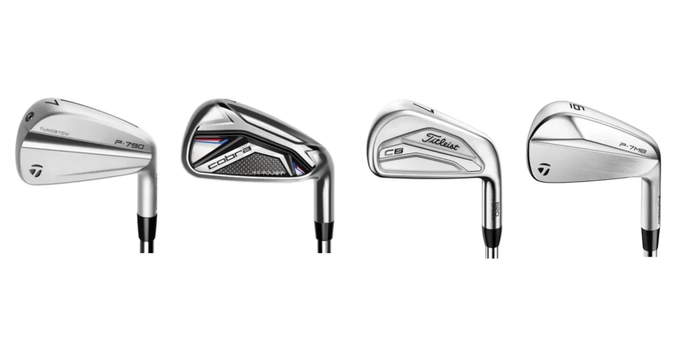

One of the most important decisions when selecting golf clubs is choosing between graphite and steel shafts. Both materials offer distinct advantages and characteristics that can significantly impact your performance. This guide provides a comprehensive comparison to help you make an informed decision.
Understanding the Basics
Steel shafts are made from stainless steel and have been the traditional choice for iron shafts for decades. Graphite shafts, typically made from carbon fiber composites, were originally developed for wood clubs but have evolved to offer excellent performance in irons as well.

Graphite Shafts: Advantages
- Lighter Weight: Can increase swing speed for more distance
- Vibration Dampening: Provides softer feel on mis-hits
- Senior-Friendly: Easier on joints and muscles
- Customization: More weight options available
Steel Shafts: Advantages
- Consistency: More uniform performance from club to club
- Durability: Longer lasting and more resistant to damage
- Control: Better feedback for precise shot-making
- Cost: Typically more affordable
Which Should You Choose?
The choice between graphite and steel depends on your individual needs, physical condition, and preferences. Many modern golfers enjoy graphite iron shafts for their combination of lightweight performance and feel, while traditionalists often prefer the consistent feedback of steel.
Consider Getting Fitted
A professional club fitter can help you experience both types and make the best choice for your specific game. The right shaft material can significantly improve your performance and enjoyment of the game.